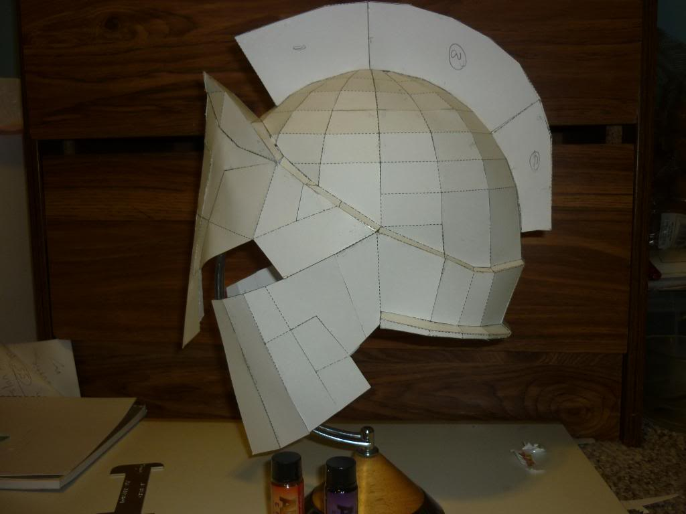
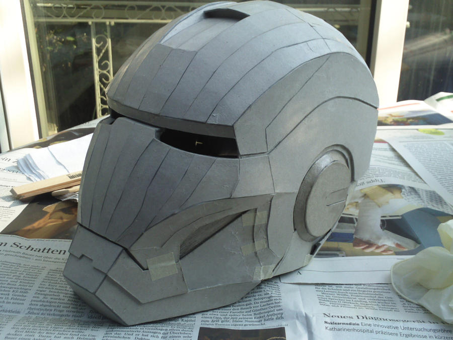

Spartan helmet
This was the first of my helmet-related project, and took some tries to build. To build this helmet, I had to first create an "outer skeletal structure" of my head, in order to get the correct head size. Then, I used paper strips soaked in a mixture of glue and water to cover the structure, which led to a hard, rigid "head cover" of the helmet. That was the hardest step to do. After that, I just had to cut the outer "face cover" out of a piece of cardboard and attach the two pieces together.
Picture from Halo Costume and Prop Maker Community - 405th by Hangmanzknot
.Iron Man helmet
One of the most fun projects to do, this was more complicated than the Spartan one due to all the details, some of which I had to ignore during the making of this helmet. I first used the same "outer skeleton" structure. However, in this case, the glue-water approach was unnecessary since the entire helmet was out of cardboard and had different components. I mainly used a template, cut it out, and glued the pieces together to form the finished helmet.
Picture from Deviant Art by Bullrick